Disciplinas
INFRAESTRUTURA PARA SISTEMAS DE SOFTWARE Concluído
Materiais
Vídeo 1 - [UFMS Digital] Infraestrutura para Sistemas de Software - Módulo 5 - Unidade 1 - Os conceitos de containers e docker sendProf.° ministrante: Carlos Alberto da Silva
Conteúdo
Os conceitos de virtualização por Container e Docker®
- Container
- Docker®
- Arquitetura Docker®
- Plataforma Docker®
Container
Virtualização por Container- É uma tecnologia que permite a criação de múltiplas instâncias isoladas de um determinado sistema operacional dentro de um único hospedeiro;
- É uma maneira de virtualizar aplicações dentro de um servidor.
Container usa uma quantidade muito menor de memória e espaço em disco que as VMs.
⇒ Container utiliza os recursos de seu próprio SO (host).
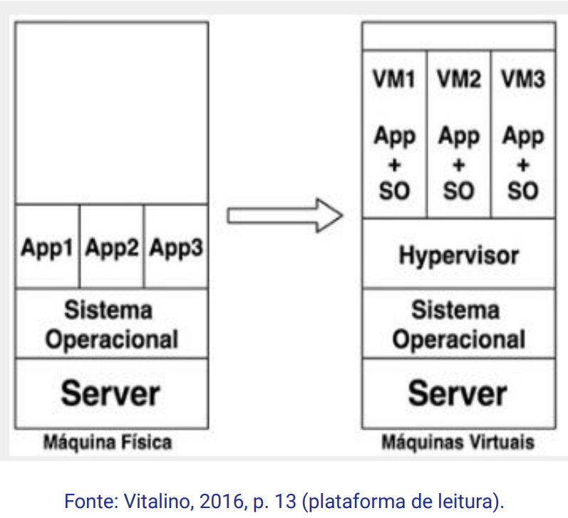 Vantagens da virtualização por Container- Tudo pode ser instalado em Containers no servidor;
- Usam bibliotecas do kernel do SO:
- O ambiente torna-se portável;
- Torna o trabalho conjunto mais eficiente.
- Simplifica a metodologia DevOps facilitando o desenvolvimento ágil;
- Permite o escalonamento de aplicações;
- Torna processos de implantação e configuração mais simples.
- Facilita o gerenciamento do ambiente:
- Economia de recursos;
- Aplicação como pacote completo;
- Replicação e padronização.
- No compartilhamento de recursos:
- Os arquivos podem ser compartilhados entre o host e o
- Ou um volume pode ser distribuído para outros.
Docker®
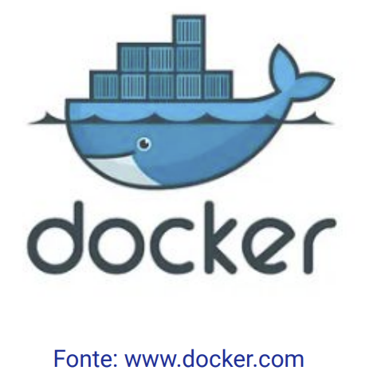- Tecnologia Open Source permite dentro de um container de software as aplicações distribuídas para:
- Desenvolver;
- Testar;
- Executar.
⇒ Empacotar uma aplicação de forma padronizada contendo: código, runtime, ferramentas, bibliotecas, etc.
Vantagens- Possibilita a implantação de aplicações de forma mais ágil, confiável e estável, em qualquer ambiente.
- Controle mais granular dos recursos gerando mais eficiência da infraestrutura.
(1) Tradicional
(2-3-4) Docker®
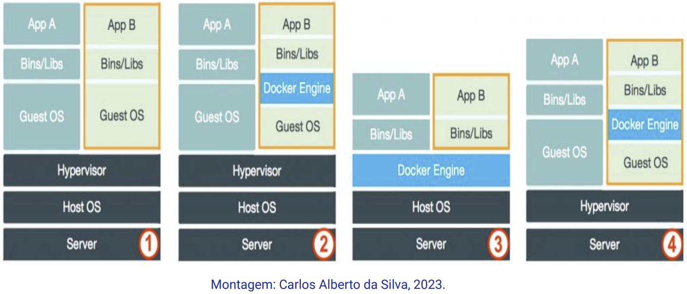Exemplo:
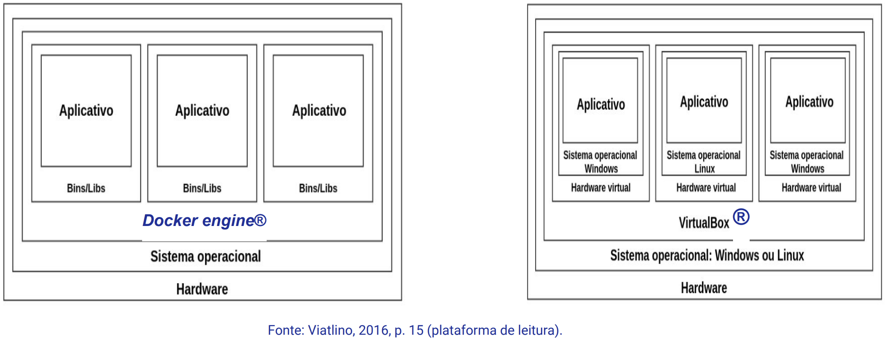 Visão geral 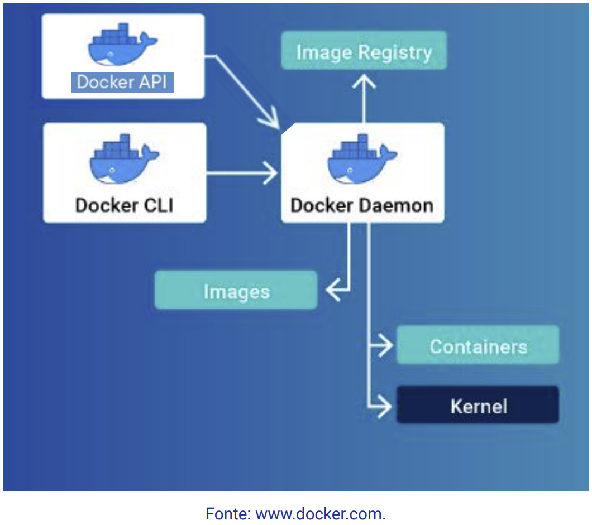Exemplo:
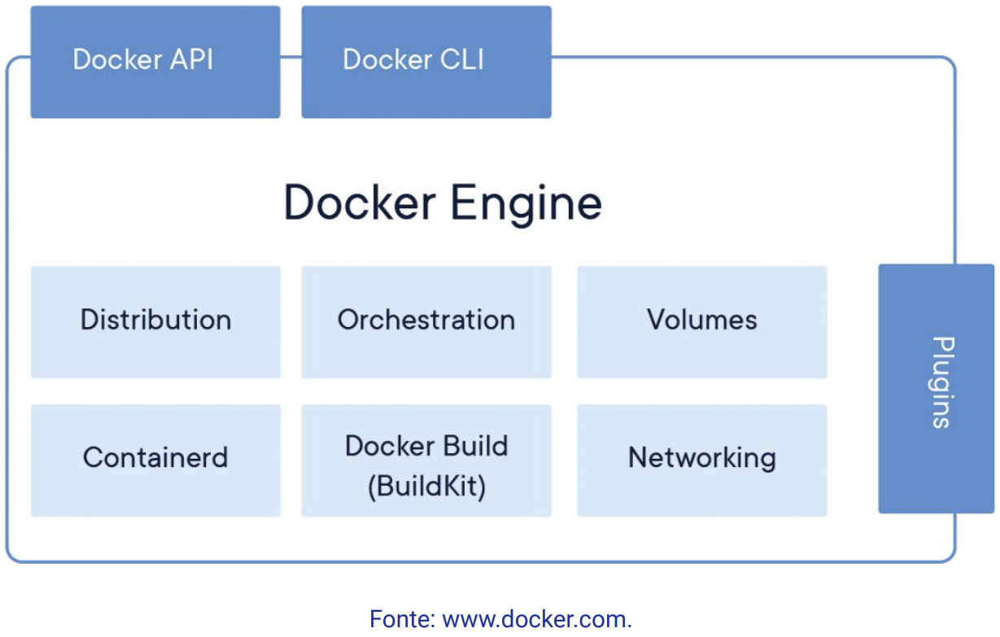 Docs (manuais)Site www.Docker.com
 Docker Personal®
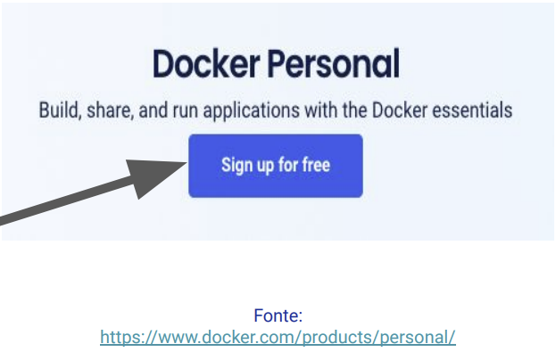
Criar uma conta para acesso
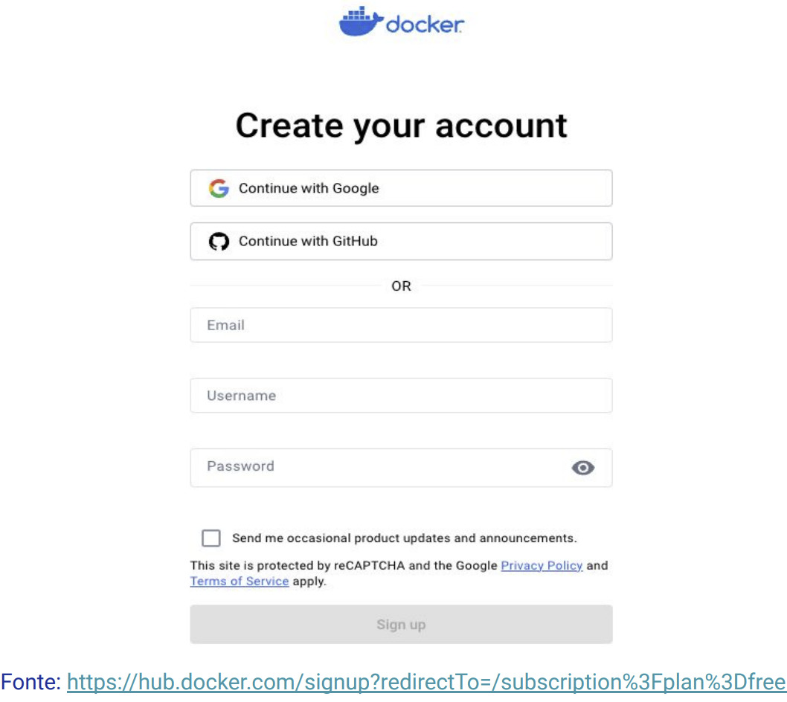
Docker Personal®
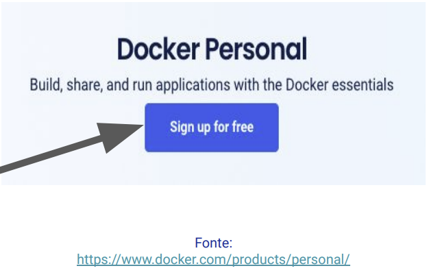
Criar uma conta para acesso
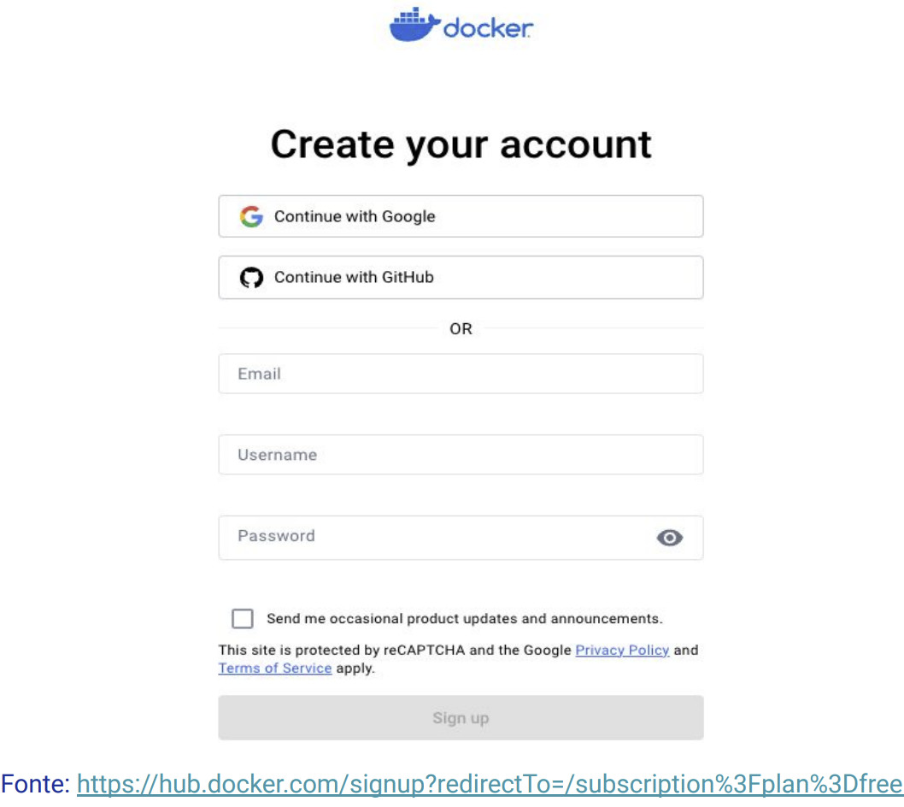
Arquitetura Docker®
Arquitetura cliente-servidor Client executa comandos
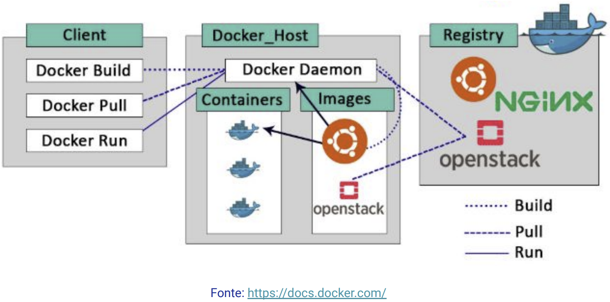
Client executa comandos
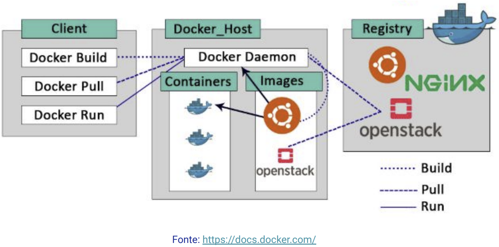
Client docker e daemon docker se comunicam por meio de:
- REST API;
- Sockets;
- Outros.
- Container engine®
- Container docker®
- Image docker®
- Dockerfile®
- Docker Registry®
- Docker Hub®
Container engine®:
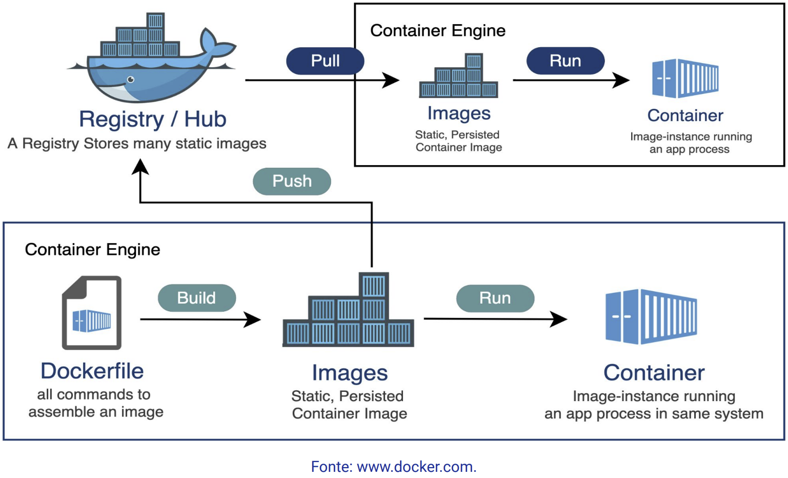Container docker®:
- Como base no image docker:
- Image é uma classe java;
- Container é uma instância desta classe.
Image docker:
- Templates para criação de container;
- São imutáveis, pois para executá-las é necessário criar um instância da mesma (container).
- São construídas em camadas:
- Facilita a reutilização e manutenção.
⇒ Ambiente encapsulado pronto para ser replicado.
Dockerfile®:
- São scripts com comandos para:
- Criar imagens;
- Executar comandos;
- Criar variáveis de ambiente;
- Copiar arquivos e pastas do host para a imagem.
Docker Registry®:
- Um repositório Git:
- Imagens podem ser versionadas.
- Docker Hub® é o repositório oficial do Docker® :
- Permite versionar e hospedar imagens privadas e públicas.
Docker Hub®:
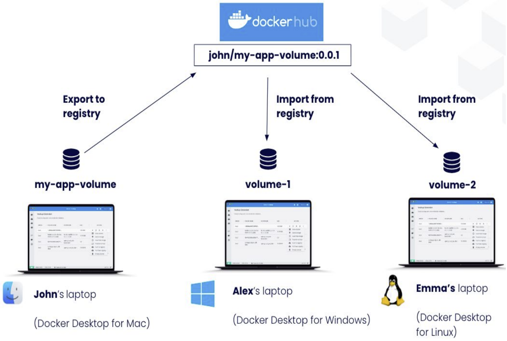Plataforma Docker®
Plataforma composta por:Docker Engine® + Docker Hub®
Docker Engine®Docker Daemon® + (Docker CLI® e/ou Docker API®)
Docker Desktop®Disponível para os sistemas operacionais
(seu Docker engine)
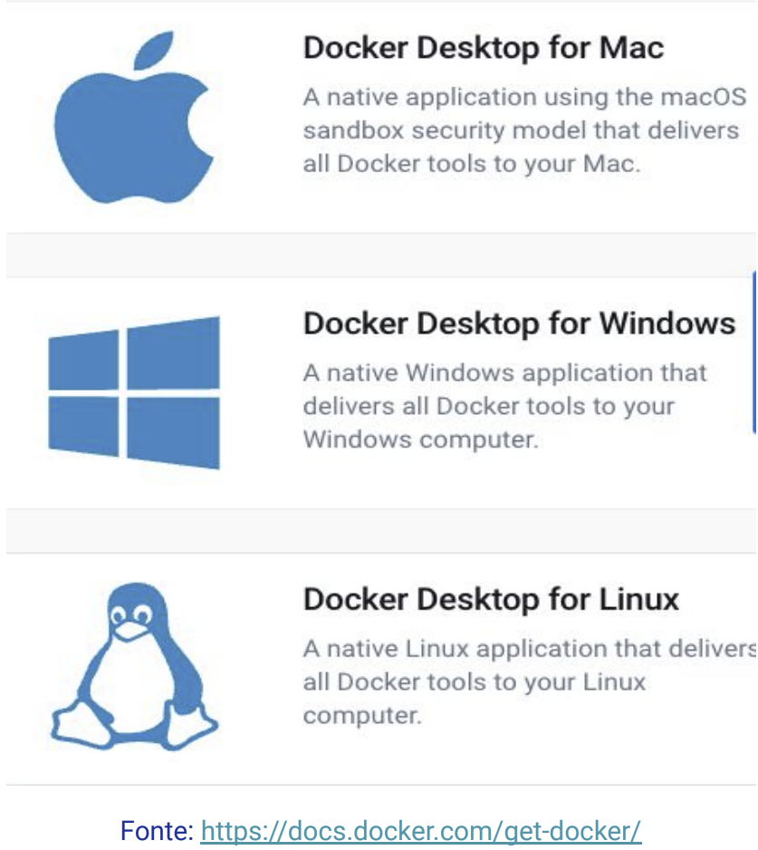 Kubernetes®Gerenciamento de vários containers Docker®
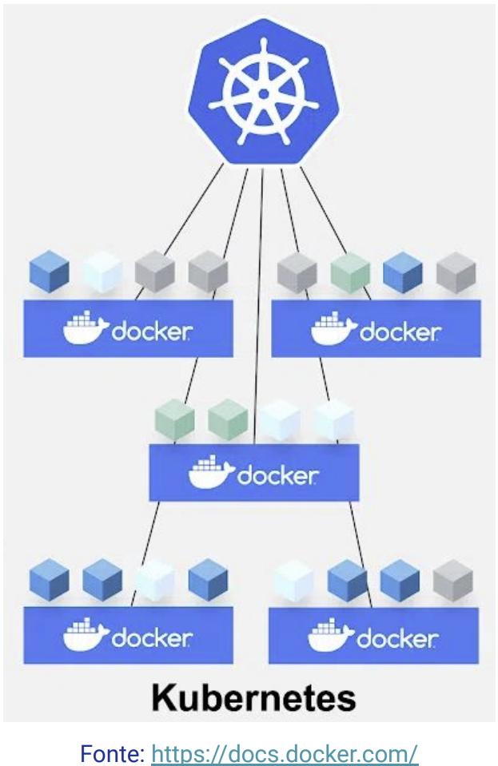 Entreprise Docker® 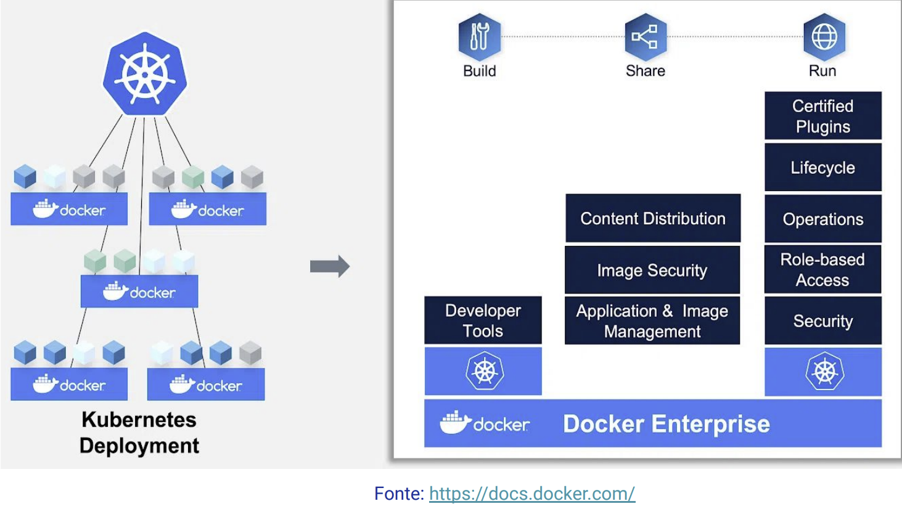Referências:
DOCKER. [Online]. Disponível em: https://www.docker.com/. Acessado em: 18 de novembro de 2023.
KUBERNETES. [Online]. Disponível em: https://kubernetes.io/pt-br/. Acessado em: 18 de novembro de 2023.
VITALINO, Jeferson Fernando Noronha; CASTRO, Marcus André Nunes. Descomplicando o Docker. 1a edição. Rio de Janeiro: Brasport, 2016. Capítulo 1 e 2. ISBN 9788574528007. Disponível na Biblioteca Digital da UFMS.